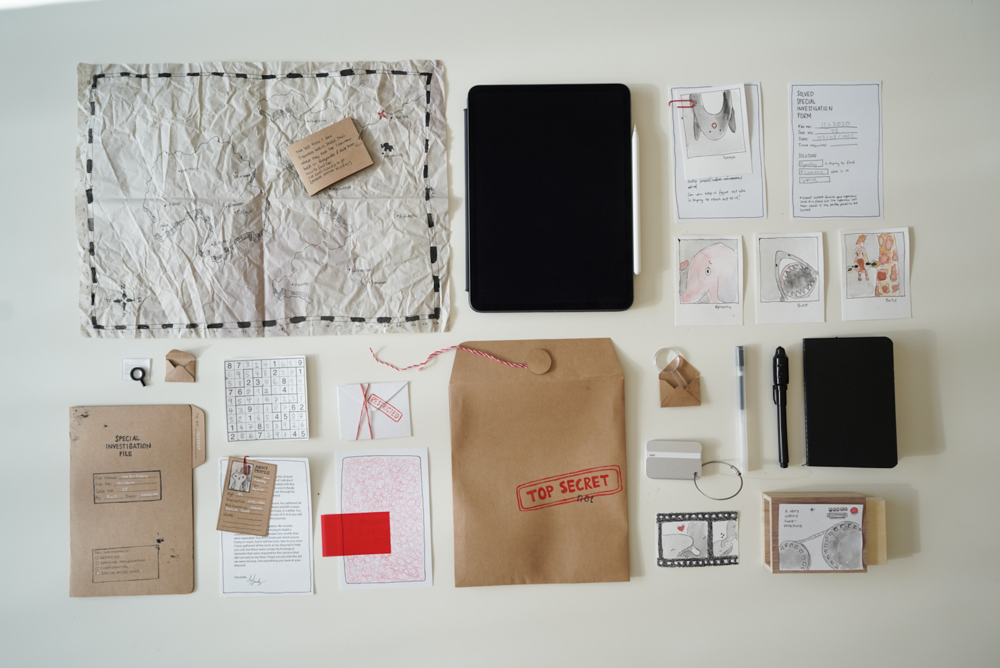

Other Projects
As someone interested in constantly learning new skills, I've worked on many different kinds of projects over time. Here I introduce some of my favorites.
Dimensional Illustration with Javascript
Using Javascript to create interactive and dimensional art (drag the illustration in different directions to see the effect). Both illustrations were created by me, the first one being an original and the second one largely based on artwork of tigers from Nellie Le and piggies art by Jens Falkenthal.
Bias in AI
In a course on social and political implications of artificial intelligence we worked on a capstone project that looked into ways in which bias can enter machine learning models. We did this through the lens of music recommendation models and provided examples of each bias type.
For the summit, in which these were presented, we had an activity attached to each of the posters. We were invited to present the project at a Waterloo music festival.
Game Design
These are two examples of gifts I have created over time. The game on top was inspired by escape rooms and was created during the pandemic as a game night gift. It included secret messages with invisible ink markers, tiny messages in 2 pt font size, encoded messages, hidden clues in books and translations of foreign languages.
The bottom game was inspired by the 'who's she?' game by Playeress. I built the base of the game, illustrated every member of my family and printed cards with prompts to ask questions specific to our family to change the game dynamic.
A Dollar a Doodle
The fundraiser
The pandemic has created many people to find creative new ways to interact with people. I was also inspired to find a way to interact with more people by starting a fundraiser for the local foodbank.
It started from a misheard conversation with my roommates about noodles (=doodles).
It ended up being well received and the Waterloo Foodbank was very excited to receive the support during the december holidays.
Bellow I'm sharing some of the 3 minute doodles created for this cause.
Senior Research Project
The project attempts to provide a general audience with an understanding of why a more critical approach to media consumption is important and and how this is a more nuanced problem than one would initially assume it to be. This will be done by doing an extensive literature review and presenting key findings in a video format that will resemble a visual essay or short documentary. Initially, the film will present some information as to why this is a relevant issue in our society, then it will provide an overview of what the scientific process looks like in practice to help those, who have very limited or no experience or contact with the sciences, see what that process is like. In particular, they could see the process of how a theory is formed, tested and eventually being published after going through a peer review process. This will be shown in order to showcase how one cannot immediately conclude from any article claiming that scientists have discovered x, that the claim is entirely true or will not change over time. Ultimately, the film provides key insights for any viewer to be: 1) More critical of the media they consume. 2) More constructive in the difficult conversations they have with people who have opposing views. 3)Less prone to make immediate conclusions. These insights will be shared in the form of conversations with different experts for which interviews will be conducted.